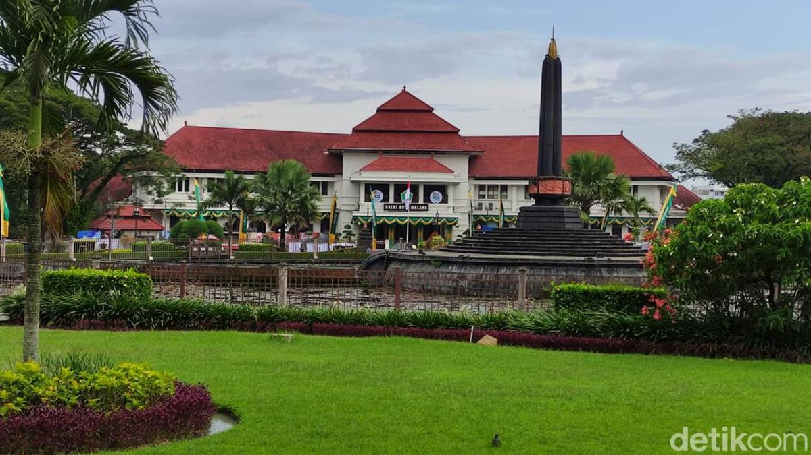
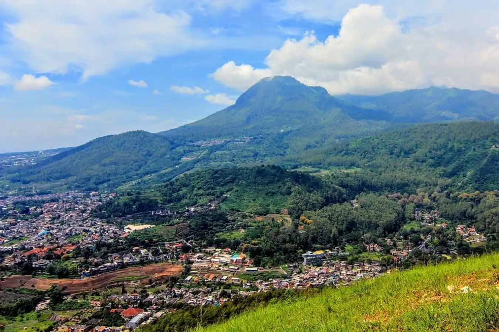
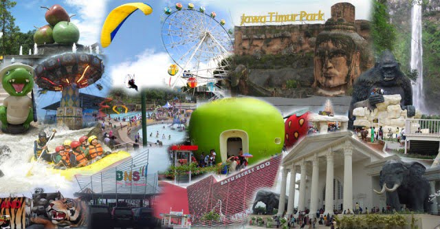

Sejarah

Sejarah Kota Malang dapat ditelusuri dari masa kerajaan Hindu di Jawa Timur. Pada abad ke-8, daerah ini dikenal sebagai "Malang" atau "Mala" yang merupakan nama sejenis bunga mawar yang tumbuh subur di wilayah ini. Pada abad ke-13, kerajaan Singasari dari Raja Kertanegara menguasai daerah ini, kemudian diikuti oleh Kerajaan Majapahit.
Pada masa kolonial Belanda, Malang menjadi bagian dari Hindia Belanda dan mengalami perkembangan pesat terutama dalam sektor perkebunan dan industri. Kota Malang menjadi salah satu pusat pendidikan dan budaya di Jawa Timur.
Geografis

Kota Malang terletak di dataran tinggi dengan ketinggian sekitar 476 meter di atas permukaan laut. Koordinat geografisnya adalah sekitar 7°57' Lintang Selatan dan 112°37' Bujur Timur. Malang dikelilingi oleh perbukitan dan gunung-gunung, termasuk Gunung Arjuno dan Gunung Semeru, gunung tertinggi di Pulau Jawa. Iklim di kota ini cenderung sejuk karena letaknya yang berada di dataran tinggi.
Wisata

Ada beberapa destinasi wisata yang dapat dikunjungi, beberapa diantaranya adalah:
Jatim Park
Taman rekreasi dan edukasi yang menawarkan berbagai wahana dan atraksi menarik, serta berbagai macam kebun binatang.
Museum Angkut
Museum transportasi yang menampilkan koleksi kendaraan dari berbagai zaman dan negara.
Batu Night Spectacular
Tempat rekreasi keluarga dengan taman bermain, wahana permainan, dan pertunjukan malam.